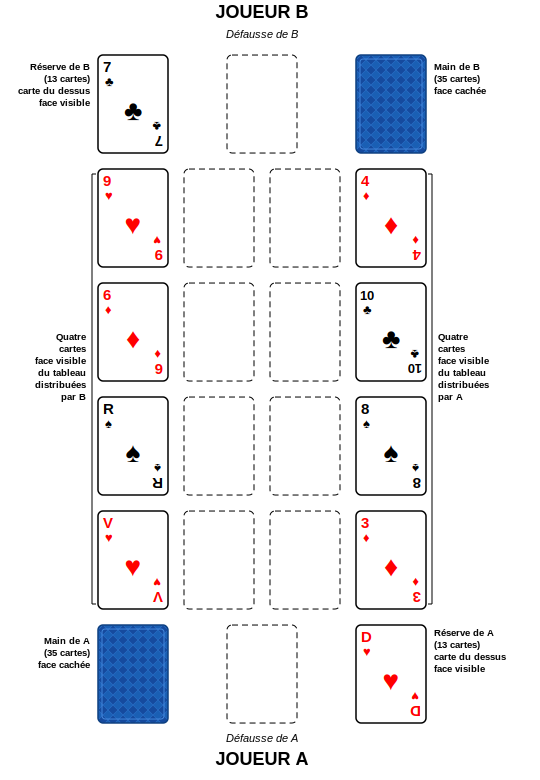

Règles du Zank-Patience
Introduction
La Crapette (Russian Bank en anglais) est un jeu de patience compétitif pour deux joueurs. Il est connu depuis plus de 100 ans sous de multiples noms comme Zank-Patience dans le livre allemand « Illustrirtes Buch der Patiencen, Breslau 1884/85 » ou Streitpatience et Schikanös–Patience. Il est populaire en France où il est connu sous le nom de Crapette. Il est aussi joué dans de nombreux pays comme l’Amérique du Nord ou la Grande-Bretagne où il est parfois appelé « Touch » ou « Stop » à cause de son gameplay (quand vous faites un coup illégal, l’adversaire peut crier stop (ou crapette en français) pour vous empêcher de finir votre tour). Au Moyen-Orient, il est connu sous le nom de Tonj, Tunj, Tonge ou Tunge.
Joueurs et Cartes
Ce jeu à deux joueurs nécessite aussi deux jeux standard de 52 cartes, un pour chaque joueur. En général, on utilise des jeux avec des dos différents car les cartes se mélangent en jouant les unes sur les autres et il faut les séparer pour la partie suivante.
Disposition initiale
Chaque joueur mélange le jeu de l’autre joueur puis échange les jeux.
Chaque joueur distribue de son propre jeu la réserve :
- une pile de 12 cartes face cachée, avec une 13ème carte face visible sur le dessus. En général le joueur place cette pile à sa droite.
Ensuite chaque joueur distribue les maisons :
- 4 cartes chacune face visible en colonne au-dessus de la réserve, sans chevauchement, en commençant par la position la plus éloignée du joueur. Au total il y a 8 maisons (connues sous le nom de tableau).
Laissez entre les 2 colonnes un espace d’au moins 2 cartes de large entre elles, il servira pour les 8 piles de fondation qui vont de l’As au Roi. Les 8 maisons du tableau ainsi que les 8 fondations appartiennent aux deux joueurs et peuvent être utilisées par n’importe qui.
Les cartes restantes (35) appelées la main (ou la pioche), sont placées face cachée à gauche de chaque joueur. Vous devriez avoir une disposition symétrique comme montré ci-dessous. Entre la main et la réserve se trouve la pile de défausse où un joueur jouera une carte pour signifier la fin de son tour.

Choisissez bien comment vous nommez vos piles et tenez-vous-y, le même terme peut désigner une pile différente selon l’endroit dans le monde où vous jouez :
- La réserve peut aussi être appelée le stock ou la crapette.
- La main peut aussi être appelée le stock, le talon ou la pioche.
- La pile de défausse peut aussi être appelée la pile d’écart ou talon.
- Les piles de fondation sont aussi connues comme piles centrales.
Objectif
L’objectif est d’être le premier joueur à se débarrasser de toutes les cartes de vos piles personnelles : votre main, défausse et réserve. Ceci est accompli en les jouant sur les fondations ou le tableau, ou sur la réserve et la pile de défausse de votre adversaire.
Jeu
Le premier joueur est celui qui a la carte la plus basse du dessus de sa réserve (de la plus basse (as) à la plus haute (roi)). S’ils sont de même rang, on compare les cartes des maisons, en commençant par la plus proche de la réserve. Le jeu se joue tour par tour jusqu’à ce qu’un joueur gagne en n’ayant plus de cartes dans sa réserve, défausse ou main, ou jusqu’à ce que le jeu atteigne une impasse si les deux joueurs constatent qu’aucun coup n’est plus possible.
Un joueur peut déplacer des cartes autour de la disposition selon des règles strictes. Les cartes sont prises une par une si elles sont considérées comme disponibles et placées sur une maison du tableau, une pile de fondation ou la réserve ou pile de défausse de l’adversaire, selon les règles de construction. Vous devez jouer selon certaines priorités car certains coups sont obligatoires.
Vous pouvez jouer aussi longtemps que vous le souhaitez jusqu’à ce que vous n’ayez pas d’autre option que de jouer sur votre pile de défausse ou si l’adversaire vous arrête parce que vous avez fait une erreur.
Cartes disponibles
Quand c’est votre tour, les cartes suivantes sont considérées comme disponibles :
- la carte visible du dessus de votre réserve ;
- la carte la plus extérieure (ou de plus faible valeur) dans chacune des huit maisons du tableau.
(Quand des cartes sont ajoutées au tableau, les cartes de chaque maison se chevauchent en une rangée s’étendant loin des piles de fondation, comme montré dans le diagramme ci-dessous. La carte disponible la plus extérieure d’une maison est donc la carte la plus récemment ajoutée à cette maison, la seule qui n’est pas partiellement couverte.)
Les cartes peuvent devenir disponibles plus tard :
- Après avoir joué la carte du dessus de votre réserve, la carte suivante de votre réserve est immédiatement retournée, la rendant disponible. (Quand il n’y a plus de carte dans votre réserve, elle reste vide jusqu’à la fin de la partie)
- Si vous n’avez pas de coup obligatoire à faire, vous pouvez retourner la carte du dessus de votre main. Vous pouvez jouer aussi longtemps que possible avant de retourner votre carte de main tant qu’il y a des coups légaux, mais vous devrez éventuellement retourner la carte du dessus de votre main la rendant disponible. Après avoir joué votre carte de main et fait tous les coups obligatoires qui deviennent possibles suite à son jeu, vous pouvez retourner votre carte de main suivante. Si vous ne pouvez pas jouer votre carte de main retournée ou ne le souhaitez pas, vous la placez sur votre pile de défausse, terminant votre tour. Les cartes placées sur votre pile de défausse ne sont plus disponibles pour vous. Cependant, si c’était une carte que vous étiez obligé de jouer selon les priorités et coups obligatoires (c’est-à-dire si elle va sur une des piles de fondation), votre adversaire pourrait vous forcer à la jouer là au lieu de sur votre pile de défausse avant qu’il ne commence son tour.
- Si votre main est vide et que vous avez besoin d’une carte, vous retournez votre pile de défausse, sans mélanger les cartes qu’elle contient, et placez la pile face cachée à gauche pour former votre nouvelle main. Vous pouvez ensuite reprendre le jeu en retournant la carte du dessus de cette nouvelle main. Vous n’êtes pas autorisé à retourner votre pile de défausse pour faire une nouvelle main tant que vous n’avez pas réellement besoin d’une carte de la main car votre adversaire est autorisé à charger des cartes sur votre pile de défausse pendant son tour.
Règles de Construction
Les cartes disponibles peuvent être jouées une à la fois sur n’importe laquelle des huit piles de fondation, n’importe laquelle des huit maisons du tableau, ou sur la réserve ou pile de défausse de l’adversaire, à condition que les règles de construction suivantes soient respectées, et sous réserve des priorités et mouvements obligatoires décrits plus tard :
- Fondations : un espace de fondation vide ne peut être rempli que par un As disponible. Une fois l’as joué, vous pouvez ajouter des cartes de la même enseigne en ordre croissant de 2 à R (23456789DVDR). ex. vous ne pouvez placer que le 6 de cœur sur un 5 de cœur. Une fois le roi atteint, la pile est verrouillée, généralement indiqué en retournant le roi face cachée.
- Maisons : les cartes sont construites en séquence descendante avec des couleurs alternées. ex. vous ne pouvez placer qu’un 9 noir sur un 10 rouge. Les cartes se chevauchent légèrement pour que toute la séquence puisse être vue (voir image ci-dessous). Si la maison est vide, vous pouvez y jouer n’importe quelle carte disponible.
- Réserve et pile de défausse : vous pouvez « charger » la réserve et la pile de défausse de votre adversaire en ajoutant une carte de la même enseigne que la carte exposée, du rang immédiatement supérieur ou inférieur (+/- 1 rang de différence). ex. si la carte du dessus de la réserve de votre adversaire est un 8 de trèfle, vous pouvez placer soit un 9 de trèfle soit un 7 de trèfle disponible. Vous pouvez charger autant de cartes qu’il y en a de disponibles (ex. vous chargez un 7 de trèfle, puis le 6 de trèfle, puis un autre 7 de trèfle et ainsi de suite)
Priorités et Mouvements Obligatoires
Certains coups sont obligatoires, et si plusieurs coups sont disponibles vous devez suivre certaines priorités :
-
(Priorité #1) Réserve vers fondation, vous devez faire ce mouvement avant tout autre.
-
(Priorité #2) Toute carte disponible vers une fondation est un mouvement obligatoire à faire. S’il y a plusieurs cartes disponibles (autres que votre carte de réserve) qui peuvent être jouées sur les fondations, vous pouvez choisir laquelle jouer en premier.
-
(Priorité #3) Toute carte jouable de votre réserve vers une maison vide, vous devez remplir toute maison vide avec votre réserve avant d’être autorisé à retourner une carte de votre main.
Si vous ne jouez pas en suivant les règles de priorité ci-dessus, ou si vous ne faites pas un mouvement obligatoire, ou tout type de coup illégal (comme une violation des règles de construction), votre adversaire peut crier « Crapette ! » et expliquer ce que vous avez fait de mal.
- Si vous avez fait un coup illégal, il doit d’abord être annulé avant de perdre votre tour en faveur de votre adversaire.
- Si vous avez manqué un coup obligatoire, votre mouvement doit être annulé, le coup obligatoire est fait à la place et vous perdez votre tour.
En résumé, votre adversaire peut crier « Crapette ! » quand :
- Vous déplacez une carte ou retournez votre carte de main alors que la carte du dessus de votre réserve aurait pu être jouée sur une fondation.
- Vous déplacez une carte ou retournez votre carte de main alors qu’il y a une carte disponible qui aurait pu être jouée sur une fondation.
- Vous retournez votre carte de main au lieu de jouer votre réserve sur une maison.
- Vous essayez de déplacer une carte vers une pile incorrecte ne respectant pas les règles de construction (ex. vous n’alternez pas les couleurs sur une maison).
- Vous essayez de déplacer une carte qui n’est pas disponible (ex. le dessus de votre pile de défausse).
Notes :
-
Contrairement à certains jeux de Solitaire (Patience), vous n’êtes pas autorisé à déplacer un groupe de cartes d’une maison du tableau à une autre, vous ne pouvez prendre les cartes qu’une par une. Vous pouvez utiliser les maisons vides pour réarranger les piles tant que vous n’omettez pas les coups obligatoires ou de priorité supérieure en prenant les cartes une par une.
- En jouant, il n’y a pas de distinction entre les cartes des deux jeux, leur seul but est de s’assurer que chaque joueur joue avec un jeu complet.
- Vous ne pouvez pas déplacer de carte de votre propre défausse (sauf dans certaines variantes) ou des piles de votre adversaire (main, défausse, réserve).
- Les cartes dans les fondations ne peuvent plus être jouées.
- Vous ne pouvez pas déplacer de carte vers les mains de l’un ou l’autre joueur ou votre propre réserve.
- Vous ne pouvez placer une carte sur votre propre pile de défausse que depuis votre main (ex. vous ne pouvez pas prendre une carte d’une maison pour charger votre pile de défausse)
Fin de la Partie ; Score
Le premier à jouer toutes ses cartes (main, réserve, défausse) gagne et la partie est terminée. Vous gagnez 30 points pour avoir remporté la partie, 1 point pour chaque carte restante dans la main et la pile de défausse de votre adversaire, et 2 points pour chaque carte restante dans la réserve de votre adversaire.
En cas d’impasse, il n’y a pas de bonus de 30 points. Chaque joueur compte ses cartes restantes (1 point pour chaque carte restante dans la main ou la pile de défausse, 2 points pour chaque carte restante dans la réserve) et le plus bas score marque la différence entre les comptes des deux joueurs. (ex. le joueur A a 12 et le joueur B a 20, le joueur A marque 8)
Après chaque partie, séparez et mélangez les jeux pour préparer la suivante.
Le premier joueur à atteindre le score cible à la fin d’une partie gagne le match
Variantes
-
La carte du dessus de votre pile de défausse est disponible, vous pouvez la jouer sur une pile de fondation, une maison ou sur les piles de votre adversaire.
-
Vous pouvez ajuster la taille de la réserve (11 ou 12 cartes au lieu de 13) et avoir des mains plus grandes en conséquence.
- Variations sur qui commence en premier :
- Vous coupez votre jeu avant de distribuer et utilisez cette carte pour décider (le plus bas commence en général)
- La carte de réserve la plus haute gagne (l’As est considéré comme le plus haut (ARDV1098765432)) si les rangs sont égaux, vous utilisez les enseignes en ordre décroissant : pique, cœur, carreau, trèfle.
- Utilisez uniquement les cartes du tableau et non la réserve pour décider.
- Si vous jouez plusieurs parties, le joueur qui a commencé en premier laisse l’autre commencer la partie suivante.
- Règles de priorité plus strictes :
- Les cartes disponibles doivent être jouées au centre, il est aussi obligatoire de libérer les cartes qui pourraient finir dans une fondation en déplaçant des cartes pour les rendre disponibles, ne pas voir cette opportunité est une faute.
- Si vous ne pouvez pas jouer sur une fondation, il est obligatoire de jouer sur les piles de votre adversaire (défausse ou réserve) quand c’est possible.
- C’est une faute si vous retournez votre carte de main alors que vous pourriez créer un espace dans le tableau.
- Variante du Tableau En disposant les tableaux, chaque joueur place une carte dans chacune de ses 4 maisons face cachée, puis distribue une carte face visible chevauchant la carte cachée. Quand la carte face cachée est exposée en retirant la carte visible qui était dessus, vous pouvez retourner la carte cachée. Les 3 règles ci-dessus sont utilisées plus une autre :
- Quand vous ne pouvez pas jouer sur les fondations, le joueur doit essayer de jouer pour découvrir les cartes cachées restantes.
-
Il existe des règles encore plus strictes comme une règle 1 plus dure : si vous pouvez libérer une carte du tableau, cela doit être fait avec le moins de coups possible.
-
Il y a des règles moins strictes, par exemple vous pouvez retourner votre carte de main dès le début de votre tour, ou la regarder pendant que votre adversaire joue encore.
-
Vos cartes de réserve sont cachées au départ jusqu’à ce que tout coup possible soit fait, puis vous pouvez retourner votre carte de réserve et les règles habituelles s’appliquent.
-
Certains permettent de déplacer des piles de cartes de la maison en entier tant qu’elles forment une séquence descendante, généralement quand on joue comme ça, on ne peut plus prendre de cartes individuelles des piles dans les maisons (sauf pour les déplacer vers les fondations)
-
Variante Simplifiée : Au lieu de 2 jeux, un seul jeu standard de 52 cartes est nécessaire. Un joueur joue avec les cœurs et les trèfles, et l’autre avec les piques et les carreaux. Maisons réduites de 4 à 3 pour chacun. La taille de la main et de la réserve est réduite mais non spécifiée ; Günther Senst suggère une réserve de 5 cartes et une main de 17 cartes.
- Partie à Trois Joueurs : 2 jeux standard de 52 cartes plus un joker sont utilisés et mélangés ensemble. Chaque joueur reçoit 35 cartes pour construire sa réserve et trois maisons. La taille de la réserve et de la main ne sont pas spécifiées, certains utilisent 8 cartes pour les réserves et 24 cartes pour les mains. La première maison à être vidée est simplement retirée du jeu, de sorte que le reste de la partie se joue comme un jeu à deux joueurs avec 8 maisons (mais un troisième joueur avec sa propre défausse, réserve et main). Le joker est simplement mis de côté quand il apparaît.
Découvrez mes autres jeux